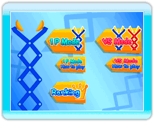

Appuyez sur  et
et  en même temps pour passer de l’écran titre au menu principal.
en même temps pour passer de l’écran titre au menu principal.
● Menu principal
Utilisez la manette Wii Remote pour déplacer le curseur et appuyez sur pour sélectionner une option.
1P Mode
(mode 1 joueur)
(voir la page 8) |
Relevez le défi d’accumuler assez de points pour battre votre record de points dans ce mode 1 joueur! |
1P Mode
How to play
(comment jouer au
mode 1 joueur) |
Apprenez les règles du mode 1 joueur. |
VS Mode
(mode un contre
l'autre)
(voir la page 8) |
Jouez contre un ou une ami(e) pour voir qui obtiendra le plus haut pointage dans ce mode un contre l’autre! Ce mode requiert deux manettes Wii Remote et deux accessoires Nunchuk. |
VS Mode
How to play
(comment jouer au
mode un contre
l'autre) |
Apprenez les règles du mode un contre l’autre. |
Ranking
(classement)
(voir la page 10) |
Consultez le classement des meilleurs pointages du mode 1 joueur. |
 |
 |
 |
 |
Sauvegarde auto
Lorsque vous commencez une partie, les données sont sauvegardées automatiquement dans la mémoire de la console Wii. Les données sont aussi sauvegardées automatiquement lorsque vous perdez la partie (Game Over) et lorsque votre pointage est enregistré.
Note : Ce jeu nécessite au moins 1 bloc dans la mémoire de votre console Wii.
Sauvegarder
Effectuer l’une des actions ci-dessous pourrait empêcher la sauvegarde de vos données ou provoquer la perte des données.
Les données ne pourront pas être récupérées, alors faites attention!
-
Éteindre ou réinitialiser la console Wii ou la manette Wii Remote pendant la sauvegarde des données.
-
Déconnecter l'adaptateur CA Wii en cours de jeu.
|
 |
 |
 |
 |